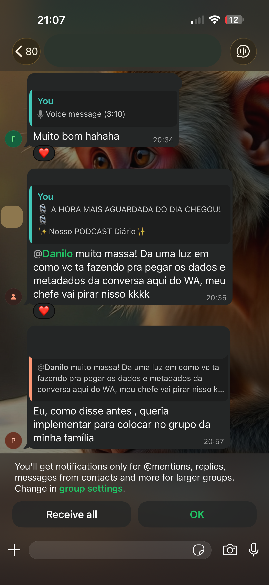

Aprenda a transformar as centenas de mensagens do dia em um podcast de resumo usando IA. Mantenha seu grupo atualizado sobre o que realmente importa, acabe com a sensação de perder informações e faça o engajamento disparar.
Veja o que os membros dos grupos estão falando após os primeiros dias recebendo o NeoDaily.
Nossa inteligência artificial analisa todo o tráfego do seu grupo: áudios longos, links soltos, debates paralelos e memes. O resultado é um roteiro coeso gravado em estúdio virtual, entregue diariamente para você.
O motor elimina trivialidades e repetições. Tenha um resumo cirúrgico focado nas decisões, notícias e debates mais críticos do grupo.
Substitua horas rolando a tela por um episódio de 5 minutos. Ouça no trânsito, na academia ou lavando a louça, recuperando seu tempo livre.
Nunca fique de fora da conversa. Chegue nas reuniões ou rodas de amigos com total contexto, sem ter precisado sofrer no grupo o dia todo.
O único treinamento que te ensina a dominar a IA e transformar o caos do WhatsApp em um podcast premium. Aproveite a condição especial e garanta seu acesso vitalício.
Risco Zero - Garantia de 7 Dias
Você tem 7 dias de garantia incondicional. Se você não gostar do treinamento por qualquer motivo, devolvemos 100% do seu dinheiro. Compra totalmente segura.
